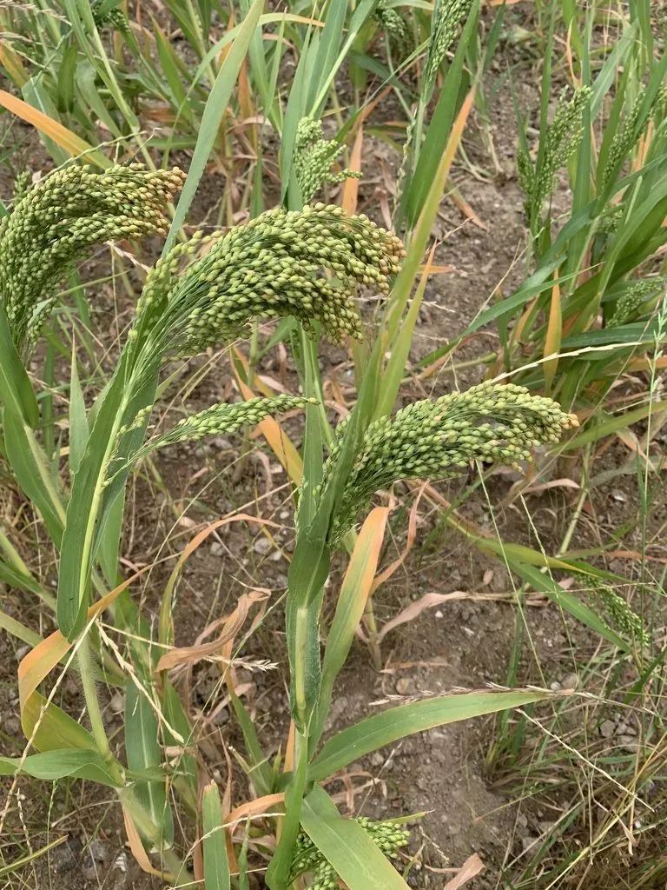

农作物与经济植物 · 植物界
黍 Panicum miliaceum

黍是我国北方古老的粮食作物，籽粒脱壳后称黄米，可制糕、酿酒，耐旱耐瘠薄，栽培历史近万年之久。
- 分类
- 门被子植物门纲单子叶植物纲目禾本目科禾本科属黍属
- 栖息环境
- 温带干旱半干旱地区的旱地，耐旱耐盐碱、生育期短
- 地理分布
- 原产中国北方与中亚，现主产于中国华北、西北及中亚地区
- 保护级别
- 暂无评估（栽培作物）
物种志
黍是一年生草本，株高 0.5–1.2 m，茎秆直立或倾斜，有分枝。叶片披针形，叶鞘有毛。圆锥花序顶生，穗形松散下垂，籽粒小，球形，有黄、白、红、褐等色，脱壳后称黄米。黍的根系发达，耐旱、耐瘠薄，生育期短，是干旱地区的重要作物。
黍原产中国北方与中亚一带，是中国最古老的栽培作物之一，考古证据显示约 1 万年前黄河流域已有黍的驯化，曾是北方先民的主粮。它耐旱、耐盐碱、耐瘠薄，适合在干旱少雨的地区种植。黄米富含蛋白质与淀粉，可蒸食、煮粥、磨粉做糕，也可酿酒、制醋；中国北方的黄米糕、油糕等传统食品都以黄米为原料。黍的秸秆可作饲料。如今黍的种植面积有所减少，但在旱作农业与特色杂粮中仍有重要地位。
形态与习性
- 株高0.5–1.2 m
- 花序圆锥花序，松散下垂
- 籽粒脱壳后称黄米
- 耐性耐旱、耐盐碱、耐瘠薄
- 食用黄米糕、油糕、煮粥
- 历史约 1 万年前在黄河流域驯化
趣味知识
- 黍的籽粒脱壳后就是黄米，北方的黄米糕、油糕都用它做。
- 黍是中国最古老的栽培作物之一，黄河流域约 1 万年前已有驯化。
- 黍耐旱耐盐碱、生育期短，适合干旱少雨地区种植。